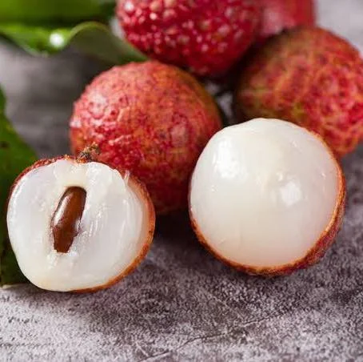

Apple
An apple is a round, edible fruit produced by an apple tree (Malus spp.). Fruit trees of the orchard or domestic apple (Malus domestica), the most widely grown in the genus, are cultivated worldwide. The tree originated in Central Asia, where its wild ancestor, Malus sieversii, is still found. Apples have been grown for thousands of years in Eurasia before they were introduced to North America by European colonists. Apples have cultural significance in many mythologies (including Norse and Greek) and religions (such as Christianity in Europe).

Orange
An orange is a citrus fruit, botanically known as Citrus sinensis, that is typically round and orange in color. It is a hybrid of the pomelo and mandarin orange. Oranges are known for their sweet and juicy pulp and are a popular source of vitamin C and other nutrients.

lychee
Lychee LEE-chee; Litchi chinensis; Chinese: 荔枝; pinyin: lìzhī; Jyutping: lai6 zi1; Pe̍h-ōe-jī: nāi-chi) is a monotypic taxon and the sole member in the genus Litchi in the soapberry family, Sapindaceae.There are three distinct subspecies of lychee. The most common is the Indochinese lychee found in South China, Malaysia, and northern Vietnam. The other two are the Philippine lychee (locally called alupag or matamata) found only in the Philippines and the Javanese lychee cultivated in Indonesia and Malaysia.[4][5] The tree has been introduced throughout Southeast Asia and South Asia.[5] Cultivation in China is documented from the 11th century.[4] China is the main producer of lychees, followed by India, Vietnam, other countries in Southeast Asia, other countries in South Asia, Madagascar, and South Africa. A tall evergreen tree, it bears small fleshy sweet fruits. The outside of the fruit is a pink-red, rough-textured soft shell..